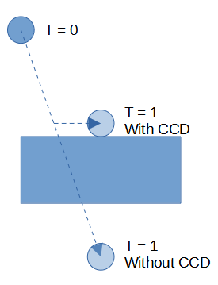
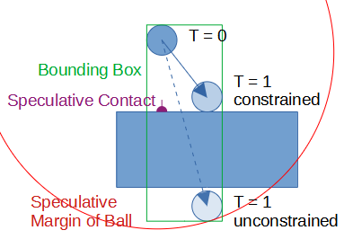
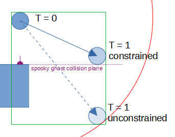
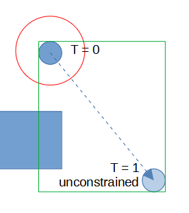
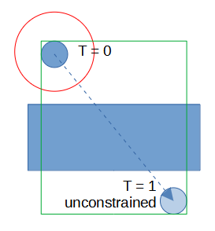
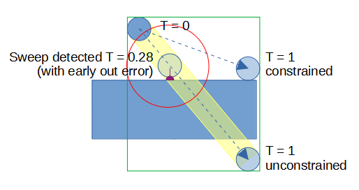

What is continuous collision detection?
Continuous collision detection is a family of techniques that try to stop bodies from tunneling into (or through) each other at high velocities. Generating normal contact constraints at discrete points in time will tend to miss such fast moving collisions or respond to them too late.

In bepuphysics2, continuous collision detection is handled mostly through speculative contacts. When those aren't sufficient, the library offers a mode that performs sweep testing to find a time of impact.
See the ContinuousCollisionDetectionDemo for more information about the topics covered here.
What's a speculative contact?
Speculative contacts are contacts with negative depth. They're still solved, but they don't apply any forces unless the velocity is high enough that the involved collidables are expected to come into contact within the next frame.
The speculative margin is the maximum distance at which a collision pair will generate speculative contacts. Bodies have configurable minimum and maximum speculative margins. The speculative margin for a body is determined from the body's velocity magnitude clamped by the specified minimum and maximum bounds. The effective speculative margin for a pair of bodies is the sum of both bodies' margins. Statics do not contribute anything to a pair's effective margin; they cannot move.

The ball is heading towards the ground with a high enough velocity that the velocity expanded bounding box intersects the ground's bounding box. Similarly, since the collidables in this picture are configured to have an unlimited speculative margin, a speculative contact is created. The solver will detect and push back the part of velocity which would result in penetration. In the next frame, the ball and ground are in contact.
Do I need to care about speculative margins?
Most of the time, you don't. Consider a body created by just specifying the collision shape like so:
var dynamicBoxShape = new Box(1, 1, 1);
Simulation.Bodies.Add(BodyDescription.CreateDynamic(
new Vector3(10, 5, 0), dynamicBoxShape.ComputeInertia(1), Simulation.Shapes.Add(dynamicBoxShape), 0.01f));
This creates a CollidableDescription from the TypedIndex returned by Simulation.Shapes.Add. When no other information is specified, a CollidableDescription defaults to a ContinuousDetection mode of ContinuousDetection.Passive. See the later section for more details, but the short version is that:
- The bounding box is expanded by the whole velocity of the body, if the collidable is associated with a body.
- The maximum speculative margin is
float.MaxValue. In other words, there's no upper limit. - No sweep tests are used. Contacts are simply created from closest features.
Taken together, this makes most stuff just work. Performance stays high since speculative contacts only get created if the velocity is high enough to warrant them, and high velocity collisions tend to have robust behavior since speculative contacts get generated. For most use cases, sticking with the default is a high performance and high quality option.
But there are cases where further tuning can be helpful. Including spooky ghost cases.
What are ghost collisions?
In the solver, a contact constraint (speculative or not) acts like a plane. As far as the solver is concerned, the contact surface has unlimited horizontal extent. This is a perfectly fine approximation when the contacts are created at a reasonable location, but it can fail when objects are moving very quickly past each other.

The ball smacks into the plane created by the speculative contact, sending the ball flying off to the side. That's a ghost collision.
You can mitigate ghost collisions by either using a higher Simulation.Timestep rate or by shrinking the maximum speculative margin on the involved bodies. To shrink the margin, instead of passing in just the shape index as your CollidableDescription, provide the BodyDescription a full CollidableDescription like so:
var dynamicBoxShape = new Box(1, 1, 1);
Simulation.Bodies.Add(BodyDescription.CreateDynamic(new Vector3(10, 5, 0), dynamicBoxShape.ComputeInertia(1),
new CollidableDescription(Simulation.Shapes.Add(dynamicBoxShape), 1, ContinuousDetection.Passive), 0.01f));
This still uses a 'passive' continuous collision detection mode (explained in a couple of sections) like the default, but limits the speculative margin for the body to between 0 and 1. Even if it's moving much faster than 1 unit per frame, no speculative contacts will be created at a greater distance than 1.

Using a smaller maximum speculative margin means that you can miss high velocity non-ghost collisions, though:

What about swept continuous collision detection?
Specifying ContinuousDetection.Continuous in the CollidableDescription means that pairs involving the collidable will use sweep-tested collision detection. That is, rather than computing contacts based on where the bodies are as of the last frame, a sweep test will determine where the bodies are likely to be at the time of impact during this frame. Contacts are then created at that time of impact.
This avoids almost all ghost collisions, since bodies passing each other at high speed will still be correctly detected as having no impact.
Swept testing can miss secondary contacts that large-margin speculative contacts wouldn't, though. But you can combine both! Speculative contacts work with sweep testing; they are not mutually exclusive. To demonstrate this, consider the configuration options for the Continuous mode.
The first parameter is a minimumSweepTimestep. While the sweep test uses a fancy algorithm that narrows the time of possible impact very rapidly with each step of execution, you can allow it to run faster by specifying a larger minimumSweepTimestep. It's effectively your maximum desired temporal resolution. If you don't care about collisions that last less than a millisecond (and your simulated units of time are seconds), then a minimumSweepTimestep of 1e-3f ensures that the search always makes at least that much progress in a single step.
You can also speed up the search by increasing the sweepConvergenceThreshold. The search algorithm works by narrowing an interval of possible collision step by step; if that interval becomes smaller than the convergence threshold (again in units of time), the search will stop.
By default, both of these values are 1e-3f. Increasing them will make the search faster, but result in larger error in the final time of impact estimate. But that's fine, because speculative margins still exist!

In the above picture, the sweep was configured such that it left a pretty noticable error in the time of impact, but it's still well within the speculative margin. While the speculative margin would have been too small to detect contacts had the test been performed at the T = 0 location, it finds appropriate contacts at T = 0.28. The goal is to find a rough time close to the time of impact such that the speculative contacts created by narrow phase testing won't cause ghost collisions. That's a pretty forgiving problem.
Overall, using Continuous will be pretty fast since it only uses sweeps when the velocity in a given pair is high enough to warrant it. If the relative velocity magnitude is below the pair's effective speculative margin, no sweep will be used. Of course, when the sweep test does run, it's not completely free, so prefer the simpler modes if they do what you want. Especially for really complicated compound shapes or meshes. (And preferably, don't have really complicated dynamic compounds or meshes.)
What other configuration options exist?
There are three continuous collision detection modes:
Discrete: No sweep tests are performed. Default speculative contact generation will occur within the speculative margin. The collidable's bounding box will not be expanded by velocity beyond the speculative margin. This is the cheapest mode when the maximum speculative margin is small, since more potential collision pairs are filtered out by the smaller bounding box. If aDiscretemode collidable is moving quickly and the maximum speculative margin is limited, the fact that its bounding box is not expanded may cause it to miss a collision with another collidable even if that collidable isPassiveorContinuous.Passive: No sweep tests are performed. Default speculative contact generation will occur within the speculative margin. The collidable's bounding box will be expanded by velocity without being limited by the speculative margin.This is useful when a collidable may move quickly and does not itself require continuous detection, but there exist other collidables with continuous modes that should avoid missing collisions.Continuous: Collision detection will start with a sweep test to identify a likely time of impact. Speculative contacts will be generated for the predicted collision. The collidable's bounding box will be expanded by velocity without being limited by the speculative margin. This mode can do well with high velocity motion and very few ghost collisions. With restricted maximum speculative margins, this mode can miss secondary collisions that would have occurred due to the primary impact's velocity change.
Note that, if the maximum speculative margin is set to float.MaxValue, there's no difference between Discrete and Passive since the bounding box will get expanded either way.
You can also set the minimum speculative margin to a nonzero value, though this is rarely useful. The effective speculative margin used in a pair is based on sum of each involved body's speculative margin. If bodies aren't moving, the speculative margins will tend to be very small. Setting a nonzero minimum could make sense if you expect there to be a lot of velocity introduced in the middle of a timestep (perhaps by other constraints) that make the velocity-estimated effective speculative margin insufficient. Usually, though, just leave it at zero.
Sometimes, it can be useful to limit the maximum speculative margin to reduce the number of constraints that get generated. Perhaps you have a giant building that's collapsing and tens of thousands of bodies are moving rapidly in close proximity- that'll generate a lot of speculative contacts, and occasionally missing a collision won't matter much. You could probably get a noticeable speed boost by reducing the maximum margin on the building chunks to a small nonzero value with no noticeable impact on quality.
Do speculative margins have any other surprising side effects?
Speculative contacts are mostly incompatible with the traditional approach to bounciness- a coefficient of restitution which sets an opposing velocity goal along a contact normal proportional to the incoming velocity. That's why you won't find a 0 to 1 CoefficientOfRestitution anywhere in the library.
Instead, all contacts are springs. In INarrowPhaseCallbacks.ConfigureContactManifold you can customize a pair's PairMaterialProperties which include a SpringSettings and MaximumRecoveryVelocity. Using a sufficiently high MaximumRecoveryVelocity and reducing the SpringSettings.DampingRatio to 0 will minimize the amount of energy damped out during a bounce. There is a bit complexity here- the Frequency must be low enough that the simulation can actually represent it. If the contact is trying to make a bounce happen at 240hz, but the integrator timestep is only 60hz, the unrepresentable motion will get damped out and the body won't bounce as much.
For more information, see the BouncinessDemo.